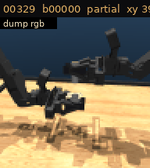
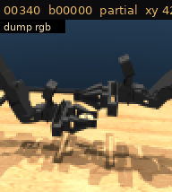
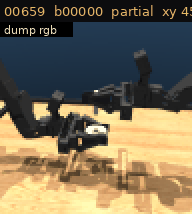
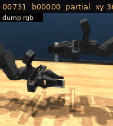

partial dumps · 47 tasks · no miss
SP-20 collect. One clip per task on this page. Left out: 00015, 00030, 00417, 00553.
Official dumps hub
Task 00004 · 1 partial
base 00000 · xy 39.1 · z 8.0
Task 00007 · 1 partial
base 00000 · xy 60.8 · z 10.6
Task 00014 · 1 partial
base 00000 · xy 34.3 · z 6.1
Task 00021 · 1 partial
base 00000 · xy 45.3 · z 6.0
Task 00028 · 1 partial
base 00000 · xy 41.1 · z 7.0
Task 00032 · 1 partial
base 00000 · xy 28.0 · z 10.4
Task 00042 · 1 partial
base 00000 · xy 39.7 · z 5.8
Task 00081 · 1 partial
base 00000 · xy 53.2 · z 8.8
Task 00117 · 1 partial
base 00000 · xy 34.2 · z 26.7
Task 00133 · 1 partial
base 00000 · xy 38.9 · z 6.6
Task 00141 · 1 partial
base 00000 · xy 34.2 · z 14.1
Task 00175 · 1 partial
base 00008 · xy 23.5 · z 63.7
Task 00186 · 1 partial
base 00000 · xy 53.8 · z 7.4
Task 00187 · 1 partial
base 00000 · xy 37.0 · z 8.2
Task 00211 · 1 partial
base 00000 · xy 26.4 · z 14.3
Task 00213 · 1 partial
base 00000 · xy 31.7 · z 5.2
Task 00271 · 1 partial
base 00000 · xy 40.1 · z 6.2
Task 00293 · 1 partial
base 00000 · xy 36.3 · z 7.1
Task 00296 · 1 partial
base 00000 · xy 39.1 · z 0.7
Task 00301 · 1 partial
base 00000 · xy 40.5 · z 7.6
Task 00329 · 1 partial
base 00000 · xy 39.0 · z 5.6
Task 00340 · 1 partial
base 00000 · xy 42.2 · z 10.3
Task 00346 · 1 partial
base 00000 · xy 38.0 · z 7.3
Task 00360 · 1 partial
base 00000 · xy 46.8 · z 23.4
Task 00388 · 1 partial
base 00000 · xy 39.4 · z 7.6
Task 00410 · 1 partial
base 00000 · xy 32.0 · z 6.6
Task 00422 · 1 partial
base 00000 · xy 48.1 · z 8.0
Task 00446 · 1 partial
base 00000 · xy 58.0 · z 60.7
Task 00480 · 1 partial
base 00000 · xy 31.5 · z 5.2
Task 00486 · 1 partial
base 00000 · xy 59.3 · z 19.1
Task 00499 · 1 partial
base 00000 · xy 41.4 · z 14.2
Task 00514 · 1 partial
base 00000 · xy 23.1 · z 7.2
Task 00581 · 1 partial
base 00000 · xy 61.1 · z 26.7
Task 00649 · 1 partial
base 00000 · xy 41.4 · z 2.9
Task 00652 · 1 partial
base 00000 · xy 39.3 · z 5.2
Task 00659 · 1 partial
base 00000 · xy 45.4 · z 5.5
Task 00686 · 1 partial
base 00000 · xy 36.8 · z 4.6
Task 00731 · 1 partial
base 00000 · xy 36.7 · z 11.3
Task 00741 · 1 partial
base 00000 · xy 44.5 · z 8.6
Task 00768 · 1 partial
base 00000 · xy 46.9 · z 11.4
Task 00831 · 1 partial
base 00000 · xy 40.5 · z 3.0
Task 00855 · 1 partial
base 00000 · xy 37.5 · z 6.3
Task 01026 · 1 partial
base 00000 · xy 45.4 · z 9.1
Task 01092 · 1 partial
base 00000 · xy 34.7 · z 6.9
Task 01102 · 1 partial
base 00000 · xy 34.0 · z 6.7
Task 01125 · 1 partial
base 00000 · xy 29.9 · z 6.4
Task 01136 · 1 partial
base 00000 · xy 46.8 · z 7.5